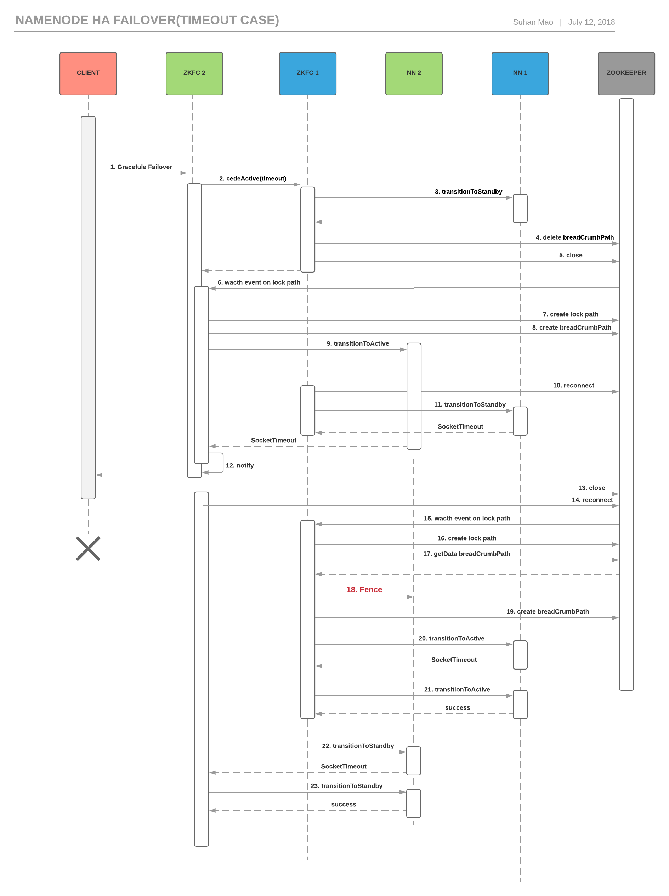

Namenode的手动failover机制的研究
这几天尝试在公司的集群做namenode的平顺failover，结果遇到了很多问题，debug了好几天。最后终于将问题的脉络梳理出来，觉得很有必要分享一下。
当时的场景是这样的：
集群是标准的namenode HA模式，配置了namenode的自动failover。其架构图如下：
有两个Namenode，最初的active是nn1，standby是nn2。每台NN上都起了zkfc，分别是zkfc1和zkfc2。
平时我们做failover的时候，往往会直接将active的NN kill掉，然后ZKFC会定时检查NN的健康状态，如果发现当前NN一直不响应，则会退出选举，
从而对方的ZKFC会赢得选举并且辅助其NN成为active。但是这个过程的风险在于如果standby变成active后处于非健康的状态或者因为别的原因crash了，
那么整个集群就不可用了，因为在一个大规模几千台节点的集群中，重新启动NN是需要超过一个小时的。
这次我打算使用平顺的failover，也就是graceful failover。根据官方文档，我们可以执行命令hdfs haadmin -failover nn1 nn2。
其中nn1是当前的active NN的id号，nn2是当前的standby的NN的id号。
小心翼翼的敲完命令执行，发现命令会一直hang在那里，然后过了大约一分钟报错，会报错，错误显示Failed to become active。当时我就比较慌，于是打开两台NN的页面，
发现两台NN目前都是standby状态，等了大半分钟，发现nn2 crash了，又等了将近一分钟，nn1重新成为了active。
这意味着我们的命令失败了，不仅没有failover成功，还把原来的standby NN杀掉了。
于是开始了我辛苦的DEBUG之旅。。。。。。
整个DEBUG过程是复杂和繁琐的，于是我直接讲结果和结论吧！
我们先了解下NN是如何实现主备选举的。简单的就是两个ZKFC作为zookeeper client都会尝试在zookeeper的某个路径下创建类型为EPHEMERAL的znode，
也就是临时节点，我们称之为zkLock znode。谁首先创建了该znode，就相当于拥有了该znode，并尝试成为active。当拥有该znode的ZKFC的zookeeper连接断开后，这个znode就会自动被回收掉。
而双方的ZKFC都会使用zookeeper的watch机制监控该znode的状态变化，当znode被回收掉，另外一方的ZKFC会尝试创建该znode，从而进行主从切换。
zookeeper中还有一个重要的znode是breadCrumb znode，属于PERSISTENT类型。当ZKFC主动放弃active状态或者ZKFC尝试成为active时会创建该节点，
并将自己的身份信息写入改节点。我们会在下面详细讲解这个节点的作用。
hdfs-site.xml可以配置ha.zookeeper.parent-znode作为zookeeper中ZKFC使用的父znode。
zkLock znode的路径是 <ha.zookeeper.parent-znode>/ActiveStandbyElectorLock
breadCrumb znode的路径就是 <ha.zookeeper.parent-znode>/ActiveBreadCrumb
下面是执行failover时候的正常情况下的时序图：
我来详细的介绍时序图中的每一步。
- CLI机器执行
hdfs haadmin -failover nn1 nn2命令，其实是通过协议ZKFCProtocol中的gracefulFailover方法发送RPC请求控制ZKFC进行failover操作。
因为nn2在命令参数的最后面，所以对应的zkfc2会接收到这个命令。 - zkfc2会向zkfc1通过ZKFCProtocol中的cedeActive(timeout)方法发送RPC请求给zkfc1。该方法的意思是要求对方退出选举，并且在timeout时间内都不得参加选举。
- zkfc1会通过HAServiceProtocol中的transitionToStandby方法发送RPC请求给nn1，请求其成为standby。nn1成功返回。
- zkfc1会删除zookeeper中位于breadCrumbPath路径的znode，表示已主动放弃active。
- zkfc1主动断开与zookeeper的连接。这时候一个隐含的行为是zkLockPath作为临时节点被删除了。
- 因为ZKFC会在zkLockPath设置watch事件，所以zkfc2很快会收到zookeeper发来的消息，得知zkLockPath被释放了。
- zkfc2在zookeeper中创建zkLock znode。
- zkfc2在zookeeper中创建breadCrumb znode，并写入身份信息。
- zkfc2会通过HAServiceProtocol中的transitionToActive方法发送RPC请求给nn2，请求其成为active。nn2成功返回。此时failover其实已经成功。
- zkfc2发送cedeActive(-1)给zkfc1，请求其立即参加选举。
- zkfc1再次发送transitionToStandby给nn1。
- CLI机器得到命令的成功返回
然而在我真正线上的场景下，遇到了一些异常，甚至遇到了nn crash的情形。其真正的时序图远比正常情况复杂得多。时序图如下：

和正常情况不同的步骤发生在第9步，我们从这里开始讲解。
根据zkfc2的日志，这边出现了SocketTimeoutException。
java.net.SocketTimeoutException: Call From
/<nn2_ip>to :8030 failed on socket timeout exception: java.net.SocketTimeoutException: 60000 millis timeout while waiting for channel to be ready for read. ch : java.nio.channels.SocketChannel[connected local=/<nn2_ip>:49697 remote= /<nn2_ip>:8030]; For more details see: http://wiki.apache.org/hadoop/SocketTimeout
这意味着zkfc2在对于nn2的transitionToActive的RPC请求超时了，超时时间是60s。我们先不去探究为何超时。我将在后面给出答案。
因为ZKFC会自动进行zookeeper的重连，从而zkfc1又会加入到选举中。但是此时的zkLock znode被zkfc2占据，所以zkfc1会尝试成为standby。
然而就是连zkfc1对于nn1的transitionToStandby也超时了。这发生在第11步。
- CLI会提早接收到failover命令的结果，显示failover失败。
- zkfc2断开与zookeeper的连接，此时zkLock znode又被释放了。
- zkfc2重新连接zookeeper。
- zookeeper发送zkLock znode被释放的消息给zkfc1。
- zkfc1创建zkLock znode。
- zkfc1访问breadCrumb znode的数据，判断是否其中的身份信息与自己相符。因为这个节点上一次是被zkfc2创建的，所以身份信息是zkfc2的。
这时，zkfc1认为zkfc2曾经尝试成为active。于是决定把nn2强制杀掉。 - 这就是关键的Fence步骤，我们在hdfs-site.xml配置了sshfence选项，zkfc1会尝试ssh登录nn2所在的节点，查看占用namenode端口所在的进程，
并发送SIGKILL信号杀死该namenode。这里对应的fencing的配置是dfs.ha.fencing.methods，可以配置成sshfence和shell。 - zkfc1创建breadCrumb znode，并写入自己的身份信息。
- zkfc1发送transitionActive给nn1，但是仍然遇到SocketTimeoutException。
- zkfc1终于在重试若干次transitionActive后将nn1置为active。
- zkfc2其实很早就加入了重新选举。但是因为zkLock znode已经被zkfc1占据，所以他只能尝试成为standby。但是仍然遇到SocketTimeoutException。
- zkfc2终于在重试若干次transitionToStandby后将nn2置为standby。
现在的疑问是为何ZKFC和NN交互会socketTimeout。我们通过监控图查看nn2的service rpc端口的callQueueLength发现的确会有一段时间callqueue打满的情况。
NN配置的service port的handler数目是55个，总的queue大小是5500 = 100 × 55
于是我又选了一个时间复现了整个过程，并且打出了当时nn2的jstack。发现55个handler全部都是处于如下的状态：1
2
3
4
5
6
7
8
9
10
11
12
13
14
15
16
17
18
19
20
21
22"IPC Server handler 52 on 8030" #731 daemon prio=5 os_prio=0 tid=0x00007f4a2deb8800 nid=0x213b waiting on condition [0x00007f212e276000]
java.lang.Thread.State: WAITING (parking)
at sun.misc.Unsafe.park(Native Method)
- parking to wait for <0x00007f2557b10400> (a java.util.concurrent.locks.ReentrantReadWriteLock$FairSync)
at java.util.concurrent.locks.LockSupport.park(LockSupport.java:175)
at java.util.concurrent.locks.AbstractQueuedSynchronizer.parkAndCheckInterrupt(AbstractQueuedSynchronizer.java:836)
at java.util.concurrent.locks.AbstractQueuedSynchronizer.doAcquireShared(AbstractQueuedSynchronizer.java:967)
at java.util.concurrent.locks.AbstractQueuedSynchronizer.acquireShared(AbstractQueuedSynchronizer.java:1283)
at java.util.concurrent.locks.ReentrantReadWriteLock$ReadLock.lock(ReentrantReadWriteLock.java:727)
at org.apache.hadoop.hdfs.server.namenode.FSNamesystem.readLock(FSNamesystem.java:1477)
at org.apache.hadoop.hdfs.server.namenode.FSNamesystem.handleHeartbeat(FSNamesystem.java:4641)
at org.apache.hadoop.hdfs.server.namenode.NameNodeRpcServer.sendHeartbeat(NameNodeRpcServer.java:1395)
at org.apache.hadoop.hdfs.protocolPB.DatanodeProtocolServerSideTranslatorPB.sendHeartbeat(DatanodeProtocolServerSideTranslatorPB.java:114)
at org.apache.hadoop.hdfs.protocol.proto.DatanodeProtocolProtos$DatanodeProtocolService$2.callBlockingMethod(DatanodeProtocolProtos.java:29064)
at org.apache.hadoop.ipc.ProtobufRpcEngine$Server$ProtoBufRpcInvoker.call(ProtobufRpcEngine.java:616)
at org.apache.hadoop.ipc.RPC$Server.call(RPC.java:969)
at org.apache.hadoop.ipc.Server$Handler$1.run(Server.java:2206)
at org.apache.hadoop.ipc.Server$Handler$1.run(Server.java:2202)
at java.security.AccessController.doPrivileged(Native Method)
at javax.security.auth.Subject.doAs(Subject.java:422)
at org.apache.hadoop.security.UserGroupInformation.doAs(UserGroupInformation.java:1709)
at org.apache.hadoop.ipc.Server$Handler.run(Server.java:2200)
所有的handler都是在处理NameNodeRpcServer.sendHeartbeat，也就数处理datanode的心跳。默认配置下，datanode每隔3s就会向namenode发送一次心跳。
但是这个请求是很轻量级的。而且我发现所有的handler都在等锁，那就要看看是谁把锁给占了，发现是Edit Log Tailer占据了写锁。
1 | "Edit log tailer" #735 prio=5 os_prio=0 tid=0x00007f4a2dec2800 nid=0x213f runnable [0x00007f212de71000] |
在EditLogTailer代码中在loadEdits之前会获得写锁。1
2
3
4
5
6try{
namesystem.writeLockInterruptibly();
// load edit logs
} finally {
namesystem.writeUnlock();
}
运行这一段代码的时间间隔配置在dfs.ha.tail-edits.period，默认是60s。这边是每次运行完loadEdits()之后休眠的时间。在我们的场景下，loadEdits显然是运行了太长的时间了。
而写锁是排它锁，所以读锁会被block。而在loadEdits运行完之后，我们就有60s的时间执行其他handler中的NameNodeRpcServer.sendHeartbeat。
根据观察，EditLogTailer.loadEdits()需要执行大概超过1分钟的时间，在此阶段所有的handler都被锁堵住，从而所有的在service port上的请求都无法被处理。
新的请求要么就是在call queue里面，要么就是根本进不了call queue。从而超过了Timeout的时间。
而且我们在nn2的日志中发现了如下的log：
2018-07-10 00:30:22,736 INFO org.apache.hadoop.ipc.Server: IPC Server handler 30 on 8030: skipped org.apache.hadoop.ha.HAServiceProtocol.transitionToActive from 10.103.108.201:34576 Call#61113 Retry#0
这段代码如下是在org.apache.hadoop.ipc.Server.Handler.run()中，也就是请求从call queue进入到了handler中。1
2
3
4if (!call.connection.channel.isOpen()) {
LOG.info(Thread.currentThread().getName() + ": skipped " + call);
continue;
}
因为ZKFC作为RPC的客户端设置有Socket的超时时间60s。而transitionToActive的等待时间超过了60s，所以客户端主动的将TCP连接断开。
所以当请求出queue进入到handler的时候，其实这个时候NIO的channel已经断开了，所以会进入到这个分支，也佐证了我的观点。
目前只有Standby NN才会执行EditLogTailer.loadEdits()，所以这就是为什么一旦NN成为standby就会出现无法响应的状态。
当然了，社区已经有了对应的patch，HDFS-6763解决这个问题，
就是去除掉Standby NN在每次loadEdits时候处理quota的代码。如果打上这个patch，应该就不会出现长期占写锁的情况从而RPC不会超时，failover也能平顺了。